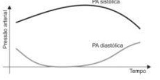
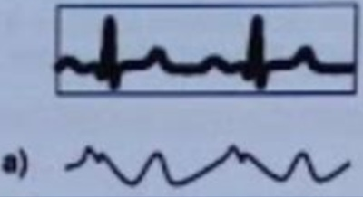
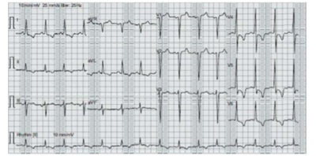
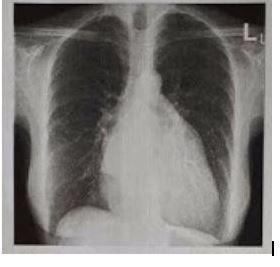
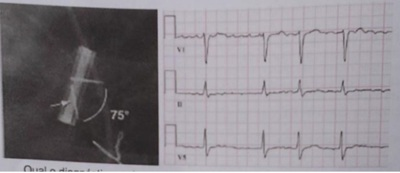
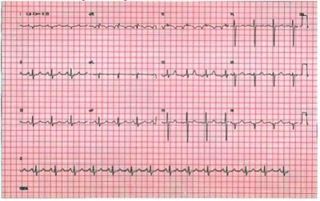
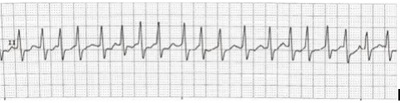
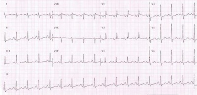
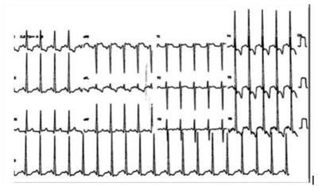
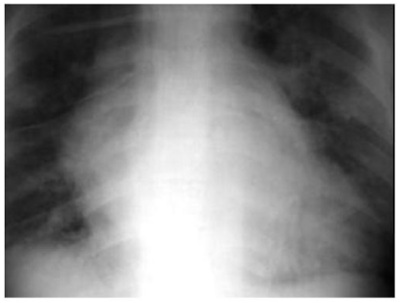

Questão 1 · Estenose mitral · Anticoagulação oral · 4000127330Paciente, 52 anos, sexo masculino, previamente hígido, assintomático, comparece à consulta de rotina no ambulatório. Ao exame físico, chamam atenção sopro em ru ar diastólico 3+/6+ no foco mitral e ritmo cardíaco irregular com frequência cardíaca em torno de 84 batimentos por minuto. Realizado eletrocardiograma ( figura abaixo) e ecocardiograma transtorácico que evidenciou estenose mitral moderada. Qual conduta deve ser tomada nesse momento?

A Iniciar uso de rivaroxaban sem necessidade de monitoração do INR.
B Iniciar varfarina e realizar a monitorização do INR ambulatorialmente.
C Internar o paciente para administrar enoxaparina e iniciar uso de varfarina.
D Manter conduta expectante, pois o paciente apresenta baixo risco de complicações
Questão 2 · Tratamento percutâneo da estenose aórtica · 4000127325Paciente masculino, 76 anos, com histórico de dispneia aos esforços moderados, foi internado com quadro de dor torácica e síncope ao realizar esforço. Realizou cateterismo que demonstrou 3 pontes pérvias de cirurgia de revascularização coronária realizada há 2 anos, sem lesões significantes. É diabético mal controlado, em uso irregular de insulina 1,6 U/kg/dia e apresenta claudicação em membros inferiores, ao caminhar cerca de 150 metros. Ex-tabagista de 75 maços/ano, abandonou tabagismo há 2 anos e mantém-se em tratamento para en sema pulmonar moderado. Ao exame, tem IMC: 33,1 kg/m², PA: 124 x 104mmHg, Pulso regular de 96 bpm com ascensão lenta. Sopro sistólico ejetivo com pico telessitólico mais audível no 2o espaço intercostal próximo à borda esternal direita. Creatinina sérica de 2,3 mg/dL (VR: 0,8-1,3). Eletrocardiograma com hipertro a ventricular esquerda e padrão de sobrecarga. Ecocardiograma com fração de ejeção de 48%, Pressão sistólica de artéria pulmonar estimada em 50 mmHg, área valvar aórtica de 0,7 cm² e gradiente Ventrículo esquerdo - Aorta de 55 mmHg. LEGENDA: VR: valor de referência; IMC: índice de massa corporal; bpm: batimentos por minuto. Qual a terapêutica preferencial para o paciente nesse momento?
A Cirurgia de troca valvar aórtica.
B Plastia de valva aórtica com balão.
C Implante de bioprótese aórtica transcateter.
D Reabilitação cardiopulmonar exercícios físicos estruturados.
Questão 3 · Tratamento medicamentoso · 4000125761Homem, 75 anos, dá entrada na emergência após episódio de síncope, com queixa de dor torácica aos esforços há 1 ano e dispneia aos esforços com piora progressiva. Ao exame, apresenta: PA = 110 x 70, FC = 80 bpm, pulmões: MV presente bilateralmente, com crepitações nasais e precórdio: sopro sistólico +4/6 em foco aórtico, rude, com irradiação cervical. Sobre a patologia apresentada pelo paciente, é incorreto afirmar que
A a causa mais comum é a calcificação aórtica, que acomete principalmente pacientesidosos.
B no exame físico, podemos ter, além do sopro ejetivo, pulsus parvus et tardus,hipofonese de B1 e B2, fenômeno de Gallavardin e desdobramento paradoxal de B2.
C há indicação de troca valvar ou implante de valva aórtica trans cateter.
D a angina pode ser decorrente do desbalanço de oferta/consumo de oxigênio em um miocárdio hipertrófico ou redução do gradiente de perfusão miocárdico (pd2 elevada).
E o uso de vasodilatadores é indicado nesse paciente.
Questão 4 · Diagnóstico · 4000124268Paciente de 88 anos, admitido na unidade de emergência cardiológica com diagnóstico de estenose aórtica grave. Quais os sintomas apresentados nessa patologia?
A Angina, isquemia e infarto do miocárdio.
B Síncope, desmaio e queda da própria altura.
C Tonturas, angina e sudorese.
D Angina, dispneia e síncope.
E Dispneia, síncope e palpitações.
Questão 5 · Exame f isico · 4000120165Mulher de 60 anos apresenta dispneia aos esforços, com piora progressiva no último ano, atualmente aos esforços habituais. Nega febre. Exame físico: bulhas rítmicas, hiperfonese de B1 com sopro diastólico em ru ar em 5° EIC esquerdo linha hemiclavicular e estalido de abertura. ECG: ritmo sinusal, sobrecarga atrial esquerda. Raio X de tórax: aumento do tronco da artéria pulmonar. A etiologia mais provável é
A degeneração senil.
B cardiopatia congênita.
C febre reumática.
D endocardite infecciosa.
Questão 6 · Exame f ísico · 4000107809Homem, 75 anos, com queixa de dor torácica em aperto, acompanhada de dispneia aos esforços, há 12 meses, com melhora ao repouso. Seu exame físico revela PA 150x70 mmHg, FC 86 bpm, ritmo regular, FR 16 ipm. À ausculta, sopro sistólico de alta frequência no segundo espaço intercostal à direita do esterno, com irradiação para a fúrcula e para a região cervical. Qual a hipótese clínica mais provável?
A Insuficiência mitral
B Comunicação interventricular
C Prolapso da válvula mitral
D Estenose aórtica
E Comunicação interatrial
Questão 7 · Exames complementares · 4000106232Considere as imagens abaixo. As alterações indicadas pelas setas correspondem, mais provavelmente, a um paciente portador de

A estenose mitral.
B hipertensão pulmonar primária.
C aneurisma de ventrículo esquerdo.
D estenose tricúspide.
E insuficiência aórtica.
Questão 8 · Exame f isico · Tratamento medicamentoso · 4000080883MIS, 20 anos, negra, Gesta I, Para 0. Fez pré-natal regularmente. Foi admitida na Maternidade do HPC queixando-se de dor em baixo ventre e perda de tampão mucoso. IG 38 semanas e 2 dias. HPP: Refere febre reumática na infância. O ecocardiograma recente revelou estenose mitral leve, com função ventricular preservada. No segundo trimestre passou a apresentar dispneia aos grandes esforços e edema MMII +/4, não foi medicada, sendo recomendado o repouso. O exame físico na admissão: encontrava-se lúcida, corada, eupnéica, FC = 92bpm, PA: 100/60 mmHg; AC sopro sistólico no foco mitral +/4+. Pulmões limpos FU 34cm, BCF: 140 bpm; AU =150UA. Toque colo apagado 90%, dilatado para 6cm. Apresentação cefálica: Bolsa íntegra. Em relação a conduta durante o pré-natal no segundo trimestre. Deveria ter sido medicada para não agravar a cardiopatia com
A Vasodilatador - isosorbida.
B Diurético - furosemida.
C Vasodilatador e diurético.
D Vasodilatador, diurético e digoxina.
E Nenhuma medicação.
Questão 9 · Estenose mitral · 4000074108O principal sintoma na estenose mitral é:
A Dispnéia.
B Hemoptise.
C Palpitação.
D Taquicardia.
Questão 10 · Valvopatias · 4000053654A doença valvar do coração é fonte de morbidade e mortalidade, em especial nos países subdesenvolvidos. Sobre a doença valvar aórtica, considere as seguintes afirmativas. 1. A valva aórtica bicúspide é a malformação congênita cardíaca mais comum. 2. Não há correlação direta entre os sinais no eletrocardiograma e a gravidade hemodinâmica na estenose aórtica. 3. O sopro da estenose aórtica é holossistólico de ejeção. 4. O pulso carotídeo sobe rapidamente e apresenta um pico tardio (amplo e prolongado). Assinale a resposta correta.
A Somente a afirmativa 2 é verdadeira.
B Apenas as afirmativas 1 e 2 são verdadeiras.
C Apenas as afirmativas 3 e 4 são verdadeiras.
D Apenas as afirmativas 2, 3 e 4 são verdadeiras.
E As afirmativas 1, 2, 3 e 4 são verdadeiras.
Questão 11 · Exame f isico · Classif icação de acordo com a gravidade dos sintomas · Tratamento cirúrgico · 4000036356Analise o caso clínico a seguir. Paciente do sexo feminino, 28 anos de idade, com história pregressa de febre reumática na infância e uso de penicilina g benzatina 1 200 000 ui entre os 16 e 18 anos de idade. Procurou pronto-socorro com relato de dispneia progressiva iniciada há aproximadamente um ano, com piora importante há dez dias, quando passou a ocorrer aos mínimos esforços, associada a palpitações. Quando em repouso, assintomática. Ao exame: corada, hidratada, sem edema de membros inferiores. Aparelho cardiovascular: bulhas arrítmicas com sopro diastólico grau 3 de Levine em região de ictus cardíaco. Aparelho respiratório: eupneica, sons respiratórios normais com crepitações em bases de ambos os pulmões, FR: 16 irpm. Abdome: normotenso. Indolor. Exames de laboratório: hb: 12,3; gl: 7 300; plt: 220 000; Cr: 0,9; Na: 135; K: 4,2. Radiogra a de tórax: índice cardiotorácico aumentado às custas de átrio esquerdo. Eletrocardiograma: brilação atrial. Ecocardiograma: valvulopatia acarretando disfunção valvar grave. Assinale a alternativa que indica a classe funcional da NYHA (New York Heart Association), a disfunção valvar e o tratamento adequado.
A CF NYHA IV / Estenose mitral / Tratamento medicamentoso.
B CF NYHA III / Insuficiência aórtica / Tratamento cirúrgico.
C CF NYHA II / Insuficiência aórtica / Tratamento medicamentoso.
D CF NYHA III / Estenose mitral / Tratamento cirúrgico.
Questão 12 · Estenose mitral · Quadro Clínico · 4000036168Considere um paciente jovem, com passado de doença reumática, evoluindo com dispneia aos pequenos esforços. Realizou ecocardiograma transtorácico, que mostrou estenose mitral importante, com escore de Block de 8. Em relação a esse escore, utilizado na avaliação de pacientes com estenose mitral, deve-se considerar os seguintes critérios:
A Calcificação, espessamento, mobilidade das cúspides e trombo em átrio esquerdo.
B Calcificação, espessamento, mobilidade das cúspides e grau de regurgitação.
C Calcificação, espessamento, mobilidade das cúspides e aparato subvalvar.
D Calcificação, espessamento, mobilidade das cúspides e diâmetro do anel valvar.
Questão 13 · Exame f ísico · 4000034067Homem de 72 anos vai ao consultório médico queixando-se de dispneia aos esforços. É hipertenso e usa enalapril regularmente com bom controle. O exame respiratório é normal. Ao exame cardiovascular, o ictus cordis é palpado no 5º espaço intercostal (EIC) esquerdo com extensão de duas polpas digitais e com duração aumentada. A ausculta do precórdio revela ritmo cardíaco irregular pela ocorrência de extrassístoles frequentes, bulhas cardíacas normofonéticas em todo o precórdio e desdobramento expiratório da segunda bulha no 2º EIC esquerdo. Há um sopro sistólico áspero no 2º EIC direito irradiando para a fúrcula esternal. No ápice cardíaco, ausculta-se um sopro sistólico suave que aumenta de intensidade no batimento pós-extrassistólico e diminui a intensidade com a manobra de handgrip. Não se ausculta sopro ao longo da borda paraesternal esquerda. Assinale o diagnóstico MAIS PROVÁVEL nesse caso.
A Estenose aórtica.
B Estenose aórtica e insuficiência mitral.
C Insuficiência mitral.
D Prolapso da valva mitral.
Questão 14 · Tipos de próteses · Trombose de prótese · 4000120661Com relação à terapia anticoagulante em paciente portador de prótese valvar cardíaca mecânica, em posição mitral, a melhor conduta é
A uso contínuo de antiagregantes plaquetários, como bissulfato de clopidogrel ou ticagrelor, associados ao ácido acetilsalicílico.
B anticoagulação com drogas antivitamina K nos primeiros 3 meses de pós-operatório e, a seguir, antiagregantes plaquetários pelos próximos 2 anos.
C anticoagulação contínua com drogas antivitamina K, controlando-se o tempo de protrombina.
D uso contínuo de heparina de baixo peso molecular, em dose máxima preconizada.
Questão 15 · Diagnóstico · 4000117674A figura abaixo ilustra a evolução das pressões sistólica e diastólica ao longo da história natural da

A Insuficiência mitral.
B Insuficiência tricúspide
C Estenose aórtica.
D Insuficiência aórtica.
E Estenose mitral.
Questão 16 · Diagnóstico · 4000117384Homem, 63 a, com cansaço progressivo aos esforços há 5 meses. Antecedentes pessoais: espondilite anquilosante há 10 anos. Exame físico: PA = 148 X 52 mmHg; FC = 92 bpm. Coração: ritmo cardíaco regular e um sopro, que está representado abaixo: O SINAL SEMIOLÓGICO ESPERADO É:
A Atrito pericárdico.
B Pulsação da úvula.
C Sopro audível na cabeça.
D Diminuição de pulsos nos membros inferiores.
Questão 17 · Exame f isico · Sopros diastólicos · 4000108653Mulher, 35 anos, queixa-se de dispneia aos esforços há 3 meses. Exame físico: FC = 92 bpm, PA = 120 x 82 mmHg, ritmo cardíaco regular, com hiperfonese da primeira bulha cardíaca, sopro mesotelediastólico 2+/4+, de baixa frequência, mais intenso em região apical com paciente em decúbito lateral esquerdo, iniciado logo após som de estalo mesodiastólico. Qual é o diagnóstico mais provável?
A Estenose mitral.
B Prolapso valvar mitral.
C Insuficiência tricúspide.
D Comunicação interventricular.
Questão 18 · Exame f ísico · 4000108400Em casos de Insu ciência Aórtica importante podem ocorrer sopro mesossistólico aórtico por hiper uxo e sopro mesodiastólico mitral por uxo direcionado para valva mitral deixando-a semifechada durante a diástole ventricular, caracterizando o sopro de:
A Gallavardin.
B Graham Steel.
C Miguel Couto.
D Austin Flint.
Questão 19 · Exame f ísico · 4000108389Múltiplos sinais propedêuticos são causados pelo alto volume sistólico ejetado na Insu ciência Aórtica importante. A intensificação do sopro femoral com compressão da artéria é denominado sinal de:
A Quincke.
B Duroziez.
C Traube.
D Hill.
Questão 20 · Exame f ísico · 4000108375O pulso com ascenso rápido e alta amplitude, conhecido como martelo d´gua ou Corrigan (palpado na carótida), é habitual manifestação da:
A Insuficiência Mitral importante.
B Insuficiência Aórtica importante.
C Estenose Aórtica importante.
D Estenose Mitral importante.
Questão 21 · Estenose aórtica · 4000108266A valvopatia aórtica tem apresentação bimodal e nos indivíduos jovens destacam-se: I - A etiologia reumática; II - A doença congênita bicúspide; III - A doença aórtica juvenil calcifica. Está correto o que se afirma em:
A I e II, apenas.
B I e III, apenas.
C II e III, apenas.
D I, II e III.
Questão 22 · Insuf iciência tricúspide · 4000107667Nos casos de insu ciência tricúspide importante (IT) ocorre pela dilatação progressiva do anel valvar tricúspide. Dentre as causas primárias, destacamos a diversos itens, EXCETO o item:
A Acometimento reumático
B Hipertensão arterial pulmonar primária.
C Prolapso e degeneração mixomatosa.
D Lesão actínica por radiação (pós-radioterapia).
Questão 23 · Insuf iciência tricúspide · 4000107646A maioria dos casos de Insu ciência Tricúspide (IT) é funcional/secundária e ocorre pela dilatação progressiva do anel valvar tricúspide. Sendo INADEQUADO que:
A Dentre as causas primárias, destacamos a febre reumática.
B A correção de valvopatias do lado esquerdo do coração não necessariamente corrige a IT.
C Nos casos de IT secundária e isolada, o tratamento medicamentoso não é preferível e a cirurgia deve ser indicada em todos os casos.
D A correção de valvopatias do lado esquerdo do coração não impede a sua progressão.
Questão 24 · Tratamento intervencionista · 4000077860Homem de 75 anos com dor esternal pelo esforço vem apresentado desmaios recentemente. Ao exame nota-se sopro sistólico pancardíaco. A melhor terapia para esta condição é:
A Angioplastia.
B Endarterectomia carotídea.
C Stent coronariano.
D Troca de válvula.
E IECA.
Questão 25 · Tratamento medicamentoso · 4000077767No paciente com estenose mitral, a administração de betabloqueadores reduz o gradiente de pressão transvalvar devido a diminuição do(a):
A Pressão venosa.
B Inotropismo.
C Frequência cardíaca.
D Pré-carga.
E Pressão venular.
Questão 26 · Insuf iciência aórtica · 4000072311Qual dos parâmetros está tipicamente reduzido na insuficiência aórtica severa crônica?
A Pressão arterial diastólica
B Pós-carga do ventrículo direito
C Diâmetro diastólico final do ventrículo esquerdo
D Pré-carga do ventrículo esquerdo
E Volume sistólico
Questão 27 · Insuf iciência tricúspide · 4000035554Quando da avaliação da etiologia secundária, na insu ciência tricúspide importante, apenas NÃO podemos concordar com o item:
A Dilatação do ânulo tricúspide (> 40 mm ou > 21 mm/m2).
B Doença valvar do lado esquerdo do coração.
C Fibrilação atrial de longa duração.
D Eletrodos de marcapasso ou desfibrilador.
Questão 28 · Estenose mitral · 4000035454No caso dos pacientes com Estenose Mitral Degenerativa, o tratamento inicial de quem se apresenta sintomático é farmacológico, reservando-se intervenção para casos refratários. Nos pacientes com alto risco cirúrgico, o implante valvar mitral transcateter foi, até o momento, realizado em um número limitado de casos. A radiogra a de tórax, compatível com o diagnóstico de estenose mitral importante, somente não é compatível com o seguinte item:
A Índice cardiotorácico normal.
B Sinais de aumento de átrio esquerdo.
C Elevação do brônquio fonte direito (“sinal da bailarina”).
D Duplo contorno atrial à direita.
Questão 29 · Exame f ísico · 4000032332Um homem de 52 anos queixa-se de dispneia e desconforto retroesternal em aperto ao andar 2 quarteirões na reta, com melhora em até 5 minutos de repouso. Nega ortopneia ou dispneia paroxística noturna. Ao exame físico: FC = 96 bpm; PA = 140 x 50 mmHg; FR = 18 irpm e SpO2 = 97%. Os exames respiratório e abdominal são normais. O exame cardiovascular revela hipofonese da primeira e segunda bulhas, sopro protomesodiastólico, aspirativo, suave, grau II, em decrescendo, mais audível na borda esternal inferior esquerda. Sobre essa doença, marque a alternativa INCORRETA:
A Existe aumento do volume diastólico final do ventrículo esquerdo, o que gera aumento da tensão na parede ventricular e pode ocasionar hipertrofia excêntrica como mecanismo compensatório.
B Espondilite anquilosante, síndrome de Marfan e febre reumática são causas possíveis.
C O tratamento de escolha das formas graves sintomáticas é cirúrgico.
D Quanto mais grave essa condição, mais intenso será o sopro.
Questão 30 · Classif icação e f isiopatologia · Tratamento intervencionista · 4000025679Mulher de 68 anos, portadora de hipertensão arterial e estenose aórtica grave, informa episódios recentes de síncope. A conduta terapêutica mais apropriada seria:
A Cateterismo cardíaco e cirurgia valvar.
B Acompanhamento clínico e controle das comorbidades.
C Tratamento percutâneo da valva aórtica.
D Realização semestral de ecodopplercardiograma.
Questão 31 · Exame f isico · Sopros diastólicos · 4000017880Procurou assistência médica uma paciente de 25 anos de idade, que apresentava dispneia aos médios esforços e edema nos membros inferiores, o qual cava mais acentuado no nal da tarde. Ela tinha histórico de amigdalites de repetição. No exame físico, constatou-se pressão arterial de 110 mmHg x 70 mmHg, frequência cardíaca de 92 bpm, saturação de oxigênio = 93% (ar ambiente) e presença de estertores inspiratórios em terço inferior de ambos os hemotórax, à ausculta pulmonar. O exame cardiovascular evidenciou pré-cordio calmo, ictus cordis visível e palpável no 5° espaço intercostal esquerdo, na linha hemiclavicular esquerda, e discreta impulsão no terço inferior da região esternal (no sentido craniocaudal). A ausculta cardíaca mostrou ritmo cardíaco regular em 2 tempos, hiperfonese da primeira bulha em área mitral, na qual, também, foi constatada a presença de sopro diastólico (tipo ru ar) - grau 3 de Levine - seguido de esforço pré-sistólico e de ruído de abertura da mitral, e discreta hiperfonese da segunda bulha em área pulmonar. O abdome apresentava-se livre e sem visceromegalias. O edema era mole, frio, indolor, com sinal de Godet presente, e observado nos dois terços inferiores de ambas as pernas. Foi realizado eletrocardiograma (ECG) de 12 derivações. Considerando esse caso clínico, julgue o item subsecutivo. O principal diagnóstico dessa paciente é estenose mitral pura.
A Certo.
B Errado.
Questão 32 · Exames complementares · Aumentos cavitários · 4000017876Procurou assistência médica uma paciente de 25 anos de idade, que apresentava dispneia aos médios esforços e edema nos membros inferiores, o qual cava mais acentuado no nal da tarde. Ela tinha histórico de amigdalites de repetição. No exame físico, constatou-se pressão arterial de 110 mmHg x 70 mmHg, frequência cardíaca de 92 bpm, saturação de oxigênio = 93% (ar ambiente) e presença de estertores inspiratórios em terço inferior de ambos os hemotórax, à ausculta pulmonar. O exame cardiovascular evidenciou pré-cordio calmo, ictus cordis visível e palpável no 5° espaço intercostal esquerdo, na linha hemiclavicular esquerda, e discreta impulsão no terço inferior da região esternal (no sentido craniocaudal). A ausculta cardíaca mostrou ritmo cardíaco regular em 2 tempos, hiperfonese da primeira bulha em área mitral, na qual, também, foi constatada a presença de sopro diastólico (tipo ru ar) - grau 3 de Levine - seguido de esforço pré-sistólico e de ruído de abertura da mitral, e discreta hiperfonese da segunda bulha em área pulmonar. O abdome apresentava-se livre e sem visceromegalias. O edema era mole, frio, indolor, com sinal de Godet presente, e observado nos dois terços inferiores de ambas as pernas. Foi realizado eletrocardiograma (ECG) de 12 derivações. Considerando esse caso clínico, julgue o item subsecutivo. Com base nas manifestações clínicas observadas, ao pedir o ECG, o médico já deverá inferir que devem estar presentes as seguintes alterações eletrocardiográ cas: eixo elétrico do complexo QRS desviado para a esquerda (acima de -30°); onda P na derivação D2, com duração normal apiculada, com aumento de sua amplitude que indique sobrecarga atrial esquerda; complexo QRS com aumento de tempo de ativação (de exão intrinsecoide); e aumento de amplitude (>30 mm) nas derivações do plano horizontal, o que indica sobrecarga ventricular esquerda.
A Certo.
B Errado.
Revisar: possível letra faltando em enunciado
Questão 33 · Sopros sistólicos · Exame f ísico · 4000016830Um homem de 75 anos se queixa de dispneia e dor torácica retroesternal ao caminhar uma quadra no plano. Nega ortopneia, dispneia paroxística noturna ou tosse. É hipertenso e faz uso de enalapril. Ao exame físico, a ausculta respiratória e o exame do abdômen resultaram normais. O exame cardiovascular revelou ritmo regular, hipofonese da segunda bulha, desdobramento paradoxal da segunda bulha, quarta bulha, sopro mesossistólico, áspero, grau III, mais intenso no segundo espaço intercostal direito paraesternal, irradiando para o pescoço e para a ponta do coração. O pulso carotídeo é de pequena amplitude e de pico tardio em relação ao ictus cordis. Considerando o caso descrito, quanto ao diagnóstico MAIS provável, assinale a alternativa CORRETA:
A O risco de morte súbita é elevado e reduz após o tratamento cirúrgico.
B A palpação do ictus cordis provavelmente revelaria aumento da área e desvio para a esquerda.
C O diagnóstico pode ser estabelecido pelo eletrocardiograma.
D A insuficiência cardíaca congestiva com fração de ejeção reduzida é manifestação precoce.
Questão 34 · Cardiologia · Insuf iciência aórtica · 4000011734Sinais de Musset, sinal de Becker, dança das artérias, sinal de Muller, sinal de Quincke, sinal de Rosenbach, sinal de Gerhard, sinal de Traube, sinal de Duroziez, sinal de Mayne e sinal de Hill. Podem ser entendidos ADEQUADAMENTE como:
A Sinais clínicos de aumento de pressão de pulso.
B Sinais clínicos de diminuição de pressão de pulso.
C Sinais clínicos de redução de pressão de pulso.
D Sinais clínicos de fluxo de pressão de pulso.
Questão 35 · Exame f isico · 4000004822Mulher, 23 anos de idade, refere palpitações aos grandes esforços. Ao exame físico: bom estado geral, corada, hidratada, PA = 120x80mmHg, FC = 96 bpm, com pulso irregular. Ausculta cardíaca: bulhas arrítmicas, com sopro diastólico em ru ar em foco mitral. Ausculta pulmonar: murmúrio vesicular presente, sem ruídos adventícios. Abdome: sem alterações. Membros inferiores: pulsos presentes e simétricos, sem edema. Quais são os diagnósticos mais prováveis?
A Estenose valvar aórtica e extrassístoles supraventriculares.
B Insuficiência valvar mitral e fibrilação atrial.
C Insuficiência valvar aórtica e taquicardia ventricular.
D Estenose valvar mitral e fibrilação atrial.
E Insuficiência valvar tricúspide e flutter atrial.
Questão 36 · Exame f ísico · 4000123025Homem, 76 anos, previamente assintomático, chega à UPA referindo dor torácica de forte intensidade com irradiação para MSE há 1 hora. É tabagista (44 anos/maço) e não faz uso de nenhuma medicação. Exame físico: PA MSE = 142 X 70 mm; MSD = 194 X 60 mmHg; pulsos diminuídos em MSE e ausculta cardíaca com sopro diastólico 3+ no foco aórtico. Qual é a principal hipótese diagnóstica?
A Estenose mitral decorrente de febre reumática.
B Insuficiência mitral decorrente de ruptura de músculo papilar.
C Insuficiência aórtica decorrente de dissecção de aorta.
D Estenose aórtica decorrente de calcificação do idoso.
E Insuficiência aórtica decorrente de coarctação de aorta.
Questão 37 · Insuf iciência aórtica · 4000119877Na semiologia do aparelho cardiovascular, a pulsação visível dos capilares subungueais (Sinal de Quincke) é sugestiva da seguinte patologia:
A Estenose aórtica.
B Insuficiência aórtica.
C Insuficiência mitral.
D Miocardiopatia dilatada.
E Tamponamento pericárdico.
Questão 38 · Estenose mitral · Fatores clínicos predisponentes · 4000108725Qual arritmia é mais frequente em pacientes cirúrgicos portadores de Doença Valvar Mitral?
A Fibrilação Ventricular.
B Taquicardia Ventricular.
C Extra-sístole atrial.
D Fibrilação Atrial.
Questão 39 · Valvoplastia mitral por cateterbalão · 4000107080Grávida de 20 anos, na 20ª semana de gestação, queixa-se de dispnéia progressiva aos esforços. A ausculta cardíaca sugere estenose mitral e o ecocardiograma transtorácico mostra sinais compatíveis com estenose mitral pura, sem calcificação e sem deformidade do aparelho subvalvar, com área mitral de 0,5cm₂. A melhor opção terapêutica é:
A Tratamento conservador com betabloqueador até o termo;
B Colocação de prótese biológica mitral;
C Colocação de prótese mecânica mitral;
D Valvoplastia percutânea por balão;
E Comissurotomia mitral.
Questão 40 · Diagnóstico · Avaliação do pulso venoso · 4000105699Mulher, 62 anos, queixa-se de fadiga aos esforços há 3 meses. Sem outras queixas.Exame físico: FC = 89 bpm, PA = 100 x 64 mmHg, ritmo cardíaco regular, desdobramento de B2 com hiperfonese do componente pulmonar, sopro holossistólico 3+/6+ mais intenso no 4º espaço intercostal junto à borda esternal esquerda e com aumento da intensidade durante a inspiração. Qual dos traçados acima é o mais representativo do pulso venoso jugular desse paciente?



A Traçado a
B Traçado b
C Traçado c
D Traçado d
Questão 41 · Tratamento medicamentoso · 4000103549Paciente de 25 anos queixa-se de dor precordial difícil de caracterizar. Ao exame físico, tem click mesossistólico, seguido de sopro, que aumenta na fase isovolumétrica da manobra de Valsalva. A dor torácica do paciente deve ser tratada com:
A digoxina
B captopril
C atenolol
D amiodarona
Questão 42 · Estenose aórtica · Valvopatias · Eletrocardiograma · 4000099588Homem, 72a, trazido a um pronto atendimento com queixa de ter apresentado dor no peito seguida de um desmaio quando ajudava a esposa a arrastar um armário, há uma hora. Nos últimos três meses teve várias vezes sensação que vai desmaiar, com tonturas e escurecimento da vista quando se esforça, o que o obriga a se sentar, havendo melhora. Antecedente pessoal: hipertensão arterial em uso de captopril 75 mg/dia. Exame físico: PA = 140 x 82 mmHg; FC = 96 bpm; Coração: bulhas rítmicas com sopro sistólico em foco aórtico com irradiação para a região cervical direita. Eletrocardiograma: A hipótese diagnóstica é:

A Estenose aórtica reumática.
B Infarto agudo do miocárdio.
C Bloqueio atrioventricular Mobitz tipo I.
D Estenose aórtica calcificada.
Questão 43 · Insuf iciência tricúspide · 4000087547Paciente masculino, veterinário em uma grande fazenda de gado, 58 anos, hipertenso há 15 anos, controlado com losartana e anlodipino, apresenta perda ponderal de 20 kg em 3 meses. Há cerca de 2 semanas, apresentando febre diária, chegando a 39 graus, associado a dispneia aos médios esforços pior há 3 dias. Na avaliação clínica no pronto socorro, apresentava divergência entre pressão sistólica e diastólica, com pulso em martelo d'água, além de sopro cardíaco diastólico, aspirativo e agudo, com exacerbação na manobra de preensão palmar. Diante do quadro clínico, pode-se inferir que a valvopatia presente no caso é:
A Estenose aórtica.
B Insuficiência aórtica.
C Estenose mitral.
D Insuficiência mitral.
E Insuficiência tricúspide.
Questão 44 · Insuf iciência pulmonar · 4000076936Uma paciente de 30 anos procura atendimento na emergência devido à dispneia, palpitações e hemoptise. Ela relatou história de febre reumática diagnosticada aos 7 anos de idade. Exame físico: Paciente lúcida, hipocorada 2+/4+, taquipnéica, acianótica e anictérica. PA: 100 x 78 mmHg, FR: 26 IRPM, Pulso Radial: 98 BPM, Tax: 36,7 graus celsius. Jugulares túrgidas a 45 graus. AR: Estertores nos nos 1/3 inferiores de ambos os pulmões. ACV: Ritmo irregular. B1 hiperfonética no foco mitral. P2>A2. Sopro diastólico 3+/6+ no foco mitral. Sopro diastólico de 2+/6+ no foco pulmonar. Sopro sistólico de 2+/6+ no foco tricúspide. B3 no foco tricúspide. Frequência cardíaca: 130 BPM. Abdômen em ventre de batráquio. Fígado a 6 cm do RCD, doloroso ao toque e pulsátil. Sinal do piparote ausente. Traube com percussão maciça. MMII: edema de 3+/4+, frio, mole e indolor. O nome do sopro localizado no foco pulmonar e sua respectiva etiologia são:
A Sopro de Graham-Steel e insuficiência pulmonar funcional.
B Sopro de Graham-Steel e insuficiência pulmonar reumática.
C Sopro de Austin-Flint e estenose pulmonar funcional.
D Sopro de Austin-Flint e estenose pulmonar reumática.
Questão 45 · Estenose mitral · Fibrilação Atrial · 4000076910Uma paciente de 30 anos procura atendimento na emergência devido à dispneia, palpitações e hemoptise. Ela relatou história de febre reumática diagnosticada aos 7 anos de idade. Exame físico: Paciente lúcida, hipocorada 2+/4+, taquipnéica, acianótica e anictérica. PA: 100 x 78 mmHg, FR: 26 IRPM, Pulso Radial: 98 BPM, Tax: 36,7 graus celsius. Jugulares túrgidas a 45 graus. AR: Estertores nos nos 1/3 inferiores de ambos os pulmões. ACV: Ritmo irregular. B1 hiperfonética no foco mitral. P2>A2. Sopro diastólico 3+/6+ no foco mitral. Sopro diastólico de 2+/6+ no foco pulmonar. Sopro sistólico de 2+/6+ no foco tricúspide. B3 no foco tricúspide. Frequência cardíaca: 130 BPM. Abdômen em ventre de batráquio. Fígado a 6 cm do RCD, doloroso ao toque e pulsátil. Sinal do piparote ausente. Traube com percussão maciça. MMII: edema de 3+/4+, frio, mole e indolor. Assinale a alternativa que contém a lesão cardíaca valvar principal e o fator desencadeante da piora sintomática apresentada pela paciente:
A Insuficiência mitral e fibrilação atrial.
B Insuficiência mitral e taquicardia paroxística supraventricular.
C Estenose Mitral e fibrilação atrial.
D Estenose Mitral e taquicardia paroxística supraventricular.
Questão 46 · Insuf iciência aórtica · 4000071569Paciente do sexo masculino, 22 anos, procura atendimento médico desejando obter atestado para realização de atividade física (basquete). O paciente é assintomático, as o exame físico revela altura de 2,0 m, peso de 90 kg, envergadura de 2,20 m. A ausculta cardíaca evidencia sopro diastólico 3+/6+ localizado no 3₀ espaço intercostal, na linha paraesternal esquerda. Qual a sua conduta em relação à liberação para atividade física nesse caso?
A O paciente está liberado para atividades recreativas, mas não para atividades competitivas.
B O paciente está liberado para atividades recreativas e competitivas.
C O paciente está liberado para atividades recreativas e poderá ser liberado para atividades competitivas se apresentar ecocardiograma normal.
D O paciente não pode realizar qualquer atividade esportiva extenuante até que outros exames sejam realizados.
E O paciente poderá ser liberado para atividade competitiva e recreativa após prescrição de beta-bloqueador.
Questão 47 · Diagnóstico · 4000055324Você detecta em uma mulher assintomática de 29 anos um sopro aspirativo 3+/4+, mais intenso na ponta com irradiação para a axila esquerda. O sopro começa logo após B1 e contínua até A2, sem variar em timbre ou amplitude (tipo platô). Também não varia com a respiração. 3 semanas após terminar trinta e três sessões de tratamento radioterápico para carcinoma de cordas vocais. A pressão arterial 110/70mmHg; a frequência de pulso 80 por minuto. Os pulsos venoso, jugular e carotídeo estão normais. Além de uma doença de 80 dias de duração aos 10 anos, que a deixou sem ir à escola em virtude de dor e desconforto nos joelhos e tornozelos, a paciente nega outras doenças. O diagnóstico mais provável, nesse caso, é:
A Estenose subaórtica hipertrófica
B Sopro de Austin Flint
C Regurgitação mitral
D Sopro funcional
E Estenose aórtica
Questão 48 · Exame f isico · Ruídos cardíacos básicos · 4000047814Reforço pré-sistólico na ausculta cardíaca e característico de qual patologia:
A Insuficiência aórtica
B Insuficiência mitral
C Estenose mitral
D Insuficiência tricúspide
E Estenose aórtica
Questão 49 · Insuf iciência mitral · 4000127946Paciente do gênero feminino, 65 anos, tabagista, hipertensa, apresenta dispneia de esforço e ortopneia de evolução progressiva. Realizada ausculta cardíaca com presença de sopro holossistólico, mais audível em região de ápice. O raio-X simples de tórax em PA (póstero-anterior) mostra a imagem abaixo. Adicionalmente à ecogra a com Doppler, nota-se jato de alta velocidade de fluxo sanguíneo regurgitante para dentro do átrio esquerdo durante a sístole. Considerando o caso apresentado, haverá indicação cirúrgica na presença da seguinte alteração:

A Corda tendínea rota.
B Associação com fibrilação atrial.
C Átrio esquerdo aumentado em 50%.
D Infarto do miocárdio prévio.
Questão 50 · Estenose mitral · 4000126287Paciente do sexo feminino, internada em hospital, em razão de uma pneumopatia com in ltrado pulmonar, coração pouco aumentado e hemoptise, na ausência de tuberculose deve ter:
A Estenose aórtica.
B Insuficiência mitral.
C Insuficiência aórtica.
D Estenose mitral.
E Insuficiência tricúspide.
Questão 51 · Estenose mitral · 4000112646Qual das seguintes condições clínicas abaixo não acarreta, inicialmente, sobrecarga ou disfunção do ventrículo esquerdo?
A Estenose aórtica.
B Insuficiência aórtica.
C Coarctação da aorta.
D Estenose mitral.
Questão 52 · Exame f isico · 4000109214Durante avaliação prática ao término da disciplina de Cardiologia, um estudante de medicina é questionado pelo professor: "Como você descreveria, de forma resumida, a ausculta cardíaca de um paciente com estenose mitral?" Dentre as respostas abaixo, qual foi a que fez com que o aluno fosse aprovado com nota "dez" na disciplina?
A Sopro mesossistólico em diamante (crescendo-decrescendo), irradiado para carótidas + presença de B4 + hipofonese de B2.
B Sopro diastólico aspirativo + ruído de ejeção da valva + presença de B3.
C Sopro mesossistólico + ruído de ejeção da valva + presença de desdobramento amplo de B2.
D Sopro em ruflar diastólico + hiperfonese de B1 + estalido de abertura da valva.
Questão 53 · Tratamento cirúrgico da estenose aórtica · 4000108475Homem, 55 anos, assintomático do ponto de vista cardiovascular. Durante sua avaliação complementar de rotina, foi observada estenose valvar aórtica importante ao ecodopplercardiograma, com área valvar aórtica < 0,9 cm² e gradiente transvalvar médio de 55 mmHg. Sobre esse quadro, assinale a alternativa INCORRETA.
A Está recomendada a troca valvar em pacientes sintomáticos (dispneia aos esforços, pré-síncope ou síncope, e angina aos esforços).
B Está recomendada a troca valvar em pacientes assintomáticos, com fração de ejeção do ventrículo esquerdo (FEVE) < 50%.
C Está recomendada a troca valvar em pacientes assintomáticos que apresentam queda da pressão arterial durante o teste de esforço.
D Está recomendada a troca valvar em pacientes sintomáticos com baixo gradiente transvalvar aórtico, e FEVE< 50%, que apresentem, ao ecocardiograma de stress com dobutamina, um aumento da velocidade de fluxo aórtico > 4 m/s com área valvar < 1.0 cm².
E Está recomendada a troca valvar em todos os pacientes assintomáticos com FEVE normal.
Questão 54 · Diagnóstico · Insuf iciência mitral · Exame f isico · 4000098328Mulher, 35a, com diagnóstico de prolapso mitral há 10 anos, assintomática. Exame físico: Bulhas rítmicas normofonéticas com sopro sistólico em foco mitral 4+/6+. Ecocardiograma: diâmetros atrial e ventricular esquerdos acima do valor normal e fração de ejeção do ventrículo esquerdo de 45%, prolapso incontinente da valva mitral com re uxo grave. Assinale a alternativa CORRETA:
A Não há indicação cirúrgica, visto que a patologia tem evolução favorável.
B A indicação cirúrgica irá depender da possibilidade de realização de reparo valvar.
C Valvotomia percutânea com balão pode ser proposta para adiar a indicação cirúrgica.
D Indica-se tratamento cirúrgico, mesmo sendo a paciente assintomática.
Questão 55 · Estenose aórtica · Sopros cardíacos · 4000096995Durante a ausculta cardíaca de um paciente, um residente cou em dúvida se o sopro que estava sendo auscultado era realmente compatível com estenose aórtica. Decidiu então pedir que o paciente realizasse uma determinada manobra, que fez com que a intensidade do sopro aumentasse, a rmando, assim, tratar-se de um quadro de estenose aórtica. Qual foi a manobra solicitada?
A Pediu que o paciente agachasse (posição de cócoras).
B Manobra de Valsalva.
C Realização de handgrip (força isométrica, comprimindo algo com as mãos).
D Pediu que o paciente ficasse em pé (posição ortostática).
Questão 56 · Exame f ísico · Diagnóstico · 4000093265Homem, 62 anos, é encaminhado ao cardiologista para avaliar edema periférico e palpitações. Ao exame físico, apresenta sopro holossistólico +++/6 no bordo esternal esquerdo inferior, que aumenta à inspiração, acompanhado de B3. Uma onda "v" proeminente é observada no pulso venoso jugular. Qual é o diagnóstico mais provável?
A Estenose mitral.
B Insuficiência aórtica.
C Pericardite constritiva.
D Insuficiência tricúspide grave.
E Síndrome da veia cava superior.
Questão 57 · Diagnóstico · Def inição · Características f isiopatológicas e clínicas · 4000057791Paciente de 85 anos apresenta quadro de insu ciência mitral e insu ciência cardíaca congestiva em forma aguda. Qual é a PROVÁVEL causa?
A Valva mitral com prolapso do folheto posterior.
B Valva mitral com doença reumática e endocardite infecciosa.
C Valva mitral normal e endocardite infecciosa.
D Valva mitral com degeneração mixomatosa e ruptura de cordoalhas.
Questão 58 · Próteses valvares · 4000057786A escolha da prótese valvar cardíaca deve considerar os riscos da anticoagulação e a probabilidade e riscos de uma reoperação futura, devido à deterioração estrutural das biopróteses. Quanto aos substitutos valvares cardíacos, é CORRETO afirmar:
A A reoperação valvar pode ser evitada com a utilização das válvulas mecânicas, pois elas não apresentam falhas estruturais, que são as únicas causas que requerem reoperações.
B A idade é o fator mais importante na escolha dos substitutos valvares, motivo pelo qual os pacientes jovens devem receber sempre válvulas mecânicas.
C As próteses biológicas são, em geral, indicadas para os pacientes mais velhos. De acordo com a Sociedade Americana de Cardiologia e o Colégio Americano de Cardiologia (AHA/ACC), na posição mitral, a idade para escolha de uma prótese biológica é a menor (ou seja, paciente mais jovem), quando comparada com a mesma indicação para a posição aórtica.
D Um tratamento alternativo para a doença valvar aórtica em pacientes jovens é o autoenxerto pulmonar (procedimento de Ross), pois os pacientes submetidos a esse tratamento não necessitarão de anticoagulação crônica e o risco de complicações relacionadas com a válvula é extremamente baixo.
E A cirurgia do autoenxerto pulmonar (procedimento de Ross) difere das cirurgias de implantes de válvulas convencionais (biológicas ou mecânicas), pois o procedimento de Ross, por ter uma complexidade técnica maior, mesmo quando realizado por cirurgiões experientes, tem uma taxa de mortalidade muito acima da mortalidade dos procedimentos convencionais para troca valvar.
Questão 59 · Critérios para escolha da prótese valvar · 4000057783Em paciente portador de doença de valva cardíaca, com indicação de substituição por prótese valvar, quais parâmetros são considerados para a decisão?
A Sexo, expectativa de vida e doenças associadas.
B Sexo, local de moradia, expectativa de engravidar e doenças associadas.
C Idade, sexo, local de moradia, expectativa de vida e doenças associadas.
D Idade, sexo e doenças associadas.
Questão 60 · Sopros sistólicos · Estenose aórtica · Etiologia · 4000037291JSP de 68 anos apresenta-se no ambulatório com queixa de piora de dispneia aos esforços há várias semanas. Antes, ele era capaz de trabalhar no seu jardim e aparar a grama, mas agora sente fadiga depois de andar 30 m. Nega dor torácica ao deambular, embora no passado refere ter sofrido episódios de desmaiar, quando subia um lance de escada, mas a sensação passou ao repousar. Ultimamente, tem apresentado desconforto ao dormir, necessitando se apoiar em três travesseiros. Às vezes, acorda à noite com dispneia, com melhora ao sentar-se com as pernas fora da cama. Também notou edema em seus pés ao nal do dia. Ele nega outros antecedentes. Refere tabagismo por 2 anos, iniciado aos 18 com o consumo de 8 cigarros ao dia, em média. Refere etilismo social de 1 copo de fermentado 2 vezes ao ano. Tem orgulho de não ter consultado um médico em anos. No momento do exame físico, está afebril, com frequência cardíaca de 96 bpm, pressão arterial de 145/92 mmHg e frequência respiratória de 15 IRPM. Glicemia capilar 89 mg/dL. O exame da cabeça e do pescoço: mucosas normocoradas, sem palidez, glândula tireoide inalterada e jugulares distendidas. Ausculta regular, com B1 normal, desdobramento de B2 durante a expiração, B4 no foco mitral, íctus sem deslocamento e sopro telessistólico na borda superior direita do esterno que se irradia para as carótidas. O pulso carotídeo tem amplitude diminuída. A respeito do caso, o diagnóstico mais provável é:
A Insuficiência cardíaca congestiva com componente isquêmico prévio.
B Insuficiência cardíaca congestiva desencadeada por endocardite.
C Cor Pulmonale.
D Insuficiência cardíaca congestiva possivelmente resultante de estenose aórtica.
E Infarto agudo do Miocárdico em parede anterior.
Questão 61 · Valvoplastia mitral por cateterbalão · 4000029484Uma mulher de 45 anos é portadora de estenose mitral de origem reumática e faz uso de atenolol. Apresenta-se em classe funcional II. O ecocardiograma transesofágico mostra área valvar mitral de 0,9 cm², com boa morfologia e insu ciência mitral mínima, ausência de trombos no átrio esquerdo; diâmetro e função sistólica do VE preservados. O ritmo no ECG é de fibrilação atrial. A conduta mais apropriada para a lesão valvar mitral é:
A Troca valvar por prótese biológica.
B Plastia mitral.
C Acompanhamento clínico apenas, com betabloqueadores e ecocardiograma a cada 6 meses.
D Troca valvar por prótese metálica.
E Valvulotomia percutânea por balão.
Questão 62 · Critérios para escolha da prótese valvar · 4000019654A correção cirúrgica das valvopatias pode ser realizada por meio de plástica valvar (tratamento conservador) ou troca valvar por prótese biológica ou mecânica. Nos casos de troca valvar, o implante de uma prótese mecânica estaria melhor indicado na seguinte situação:
A Idade acima de 70 anos.
B Sexo feminino, em idade fértil (risco de engravidar).
C Sexo masculino, com baixo nível socioeconômico e cultural.
D Presença de fibrilação atrial crônica e aumento de cavidades esquerdas.
Questão 63 · Exame f isico · 4000002507Paciente de 32 anos, procurou atendimento ambulatorial por apresentar dispneia aos esforços moderados. O exame físico do aparelho cardiovascular apresentava P2 > A2, primeira bulha mitral hiperfonética, sopro diastólico no quinto espaço intercostal esquerdo na linha hemiclavicular +++/6+; PA = 110 x 70 mmHg e FC 90 bpm. Neste caso, qual o principal diagnóstico, tratamento inicial e o exame considerado padrão-ouro no diagnóstico das valvopatias, respectivamente?
A Estenose tricúspide, betabloqueador e cintilografia do miocárdio.
B Estenose mitral, betabloqueador e ecocardiograma.
C Estenose pulmonar, diurético e ecocardiograma.
D Insuficiência mitral, diurético e ecocardiograma.
Questão 64 · Exame f isico · 4000111519A instalação de brilação atrial aguda com resposta ventricular elevada em paciente com estenose mitral pode precipitar o aparecimento de:
A Infarto agudo do miocárdio.
B Edema pulmonar.
C Embolia de pulmão.
D Angina pectoris.
Questão 65 · Estenose mitral · 4000108595Mulher, 45 anos, queixa-se, em consultório médico, de dispneia progressiva aos esforços, no último ano. Exame físico: Som claro pulmonar à percussão bilateralmente, crepitação pulmonar bibasal. FC= 80 bpm; PA= 110 x 70 mmHg. Ritmo cardíaco irregular, hiperfonese de B2 em foco pulmonar, com sopro diastólico em foco mitral em ru ar 3+/4. Qual é o mecanismo fisiopatológico mais provável neste caso?
A Hiperreatividade arteriolar pulmonar idiopática.
B Hipertrofia arteriolar pulmonar.
C Elevação da pressão venocapilar pulmonar.
D Oclusão tromboembólica arterial pulmonar
Questão 66 · Trombose de prótese · 4000107812Mulher de 47 anos, moradora de zona rural, foi submetida a substituição de valva mitral por prótese mecânica há 3 anos devido a valvopatia mitral reumática. Deu entrada no serviço de emergência referindo que estava bem até há aproximadamente 3 semanas, quando começou a apresentar dispneia progressiva aos esforços físicos que culminou em ortopnéia e dispneia paroxística noturna. Faz uso de propranolol 80mg/dia e marevan 5mg/dia. Não sabe o valor do último INR, mas refere que o médico lhe disse que "estava bom". Ao exame físico o médico plantonista observou taquipnéia, frequência cardíaca média 65 bpm, irregular, pressão arterial de 100/70 mmHg e estertores inspiratórios bilaterais. Ele não auscultou sopro cardíaco. A paciente pesa 72kg. Sem acesso à ecocardiogra a, o médico plantonista realizou uma fluoroscopia. As figuras abaixo ilustram uma grafia da prótese valvar durante e cinefluoroscopia e o EGG. Qual o diagnóstico mais provável?

A Desproporção entre tamanho da prótese/paciente ("mismatch").
B Trombose de prótese.
C Disfunção estrutral da prótese.
D Arritmia cardíaca resultando em disfunção de prótese.
Questão 67 · Exames complementares · Aumentos cavitários · 4000078015Considere o eletrocardiograma a seguir. (VER IMAGEM) Esse eletrocardiograma será provavelmente encontrado no caso de um paciente cujas características são:

A Mulher de 51 anos com hiperfonese de B1, sopro diastólico 3+/6 e sopro sistólico 2+/6+ em foco aórtico.
B Homem de 67 anos com hipofonese de bulhas e sopro ejetivo, em crescendo e decrescendo em foco aórtico 3+/6+.
C Mulher de 42 anos com hipofonese de B1 e sopro holossistólico 4+/6 em foco mitral com irradiação para a axila.
D Homem de 37 anos, apresentando hiperfonese de B1 e sopro diastólico em ruflar 2+/6+ em foco mitral.
Questão 68 · Próteses valvares · 4000069150Em qual dos pacientes está INDICADA cirurgia cardíaca para troca valvar aórtica?
A Paciente de 60 anos, com área valvar aórtica de 0,8cm², assintomático
B Paciente de 70 anos, com área valvar aórtica de 0,7cm² e episódios de síncope
C Paciente de 20 anos, portador de válvula aórtica bicúspide, previamente assintomático, com endocardite aórtica não complicada
D Paciente de 65 anos, com área valvar aórtica de 1,5cm², hipertrofia ventricular esquerda concêntrica, com cansaço aos esforços
Questão 69 · Estenose tricúspide · Insuf iciência tricúspide · 4000068899Sobre as doenças da valva tricúspide, é CORRETO afirmar que:
A Nos casos de insuficiência tricúspide, o tratamento cirúrgico é quase sempre indicado, mesmo quando há lesão pura, sem estenose tricúspide associada.
B Nos pacientes com insuficiência tricúspide grave, as pressões diastólicas finais médias do átrio direito e do ventrículo direito se mostram reduzidas.
C A estenose tricúspide dificilmente está associada a outras doenças valvares.
D Icterícia, cirrose, anasarca são achados físicos que podem estar presentes em pacientes portadores de estenose tricúspide grave.
E As causas não reumáticas de estenose tricúspide são as mais frequentes.
Questão 70 · Estenose mitral · Fibrilação Atrial · Edema Agudo Pulmonar · 4000056996MNR, 36 anos, sexo masculino, previamente assintomático, nega uso de medicamentos e comorbidades, porém não realiza acompanhamento médico periódico. Chega à emergência queixando-se de palpitações de início súbito, intensa falta de ar e tosse. Relata que teve vários episódios de palpitação no passado, quase sempre durando um ou dois dias, mas nunca havia apresentado dispneia. Ao exame físico, PA= 94 x 66 mmHg, FR= 24 ipm, Sat O2 = 91% (ar ambiente), taquicárdico, dispneico, apresentando tosse com escarro espumoso de coloração rosada, ausência de turgência jugular. À ausculta apresenta estertores crepitantes em bases pulmonares e terço médio bilateralmente; B1 hiperfonética com estalido de abertura e sopro diastólico em ru ar no ápice cardíaco. O ictus cordis não está deslocado e o paciente não apresenta edema de MMII. A derivação DII do ECG é reproduzida abaixo: (VER IMAGEM) Quais diagnósticos devem ser feitos para o adequado manejo do paciente em questão?

A Estenose mitral, edema agudo de pulmão, fibrilação atrial.
B Estenose mitral, tromboembolismo pulmonar, taquicardia paroxística Supraventricular.
C Prolapso de valva mitral, edema agudo de pulmão, fibrilação atrial.
D Prolapso de valva mitral, tromboembolismo pulmonar, taquicardia paroxística supraventricular.
E Comunicação interventricular, tromboembolismo pulmonar, flutter atrial.
Questão 71 · Exame f ísico · 4000055522É importante um médico identi car estenose aórtica, pois podemos nos deparar com este paciente na emergência. Ao exame, suspeitamos desta patologia quando:
A Temos a tríade clássica angina, síncope ou insuficiência cardíaca.
B Temos um sopro do tipo “ruflar” diastólico em área aórtica.
C Há sinais de sobrecarga de volume ao ecocardio.
D A complacência do VE encontra-se aumentada.
E A intensidade do sopro não muda no decorrer dos anos.
Questão 72 · Estenose mitral · Cardiopatias na gestação · 4000053961A valvopatia mais diagnosticada no ciclo gravídico-puerperal e que oferece maior risco para a mãe e para o feto, na evolução da gestação, é a
A estenose mitral.
B insuficiência mitral.
C estenose aórtica.
D insuficiência aórtica.
Questão 73 · Exame f isico · 4000116348"No Brasil, a doença valvar representa uma significativa parcela das internações por doença cardiovascular. Diferentemente de países mais desenvolvidos, _________________________é(são) a principal etiologia das valvopatias no território brasileiro, responsável por até 70% dos casos." Assinale a alternativa que completa corretamente a afirmativa anterior.
A traumas;
B febre reumática;
C endocardite infecciosa;
D deformidades congênitas;
Questão 74 · Exames complementares · 4000112840Mulher, 33 anos, com história de dispneia progressiva aos esforços há cerca de quatro meses, evoluindo com ortopneia e episódios de dispneia paroxística noturna frequentes. Ao exame, ictus cordis posicionado no quinto espaço intercostal, na altura da linha hemi clavicular. Ausculta do tórax evidenciou ritmo cardíaco regular, com hiperfonese de B1 em foco mitral e hiperfonese e desdobramento de B2 em foco pulmonar, além de presença de crépitos em ambas bases pulmonares. Eletrocardiograma abaixo. Radiogra a de tórax mostrou alargamento da carina traqueal, quarto arco à esquerda, presença de duplo contorno à direita, cefalização dos vasos pulmonares e linhas B de Kerley. Índice cardio torácico preservado. Pulso venoso mostrando onda “a” ampla. O achado ecocardiográfico mais provavelmente encontrado nesta paciente foi:

A Dilatação biatrial, mais severa em átrio esquerdo, com sinais de hipertensão pulmonar. Presença de fusão de comissuras em válvula mitral, com calcificação de seus folhetos e redução de sua área. Ventrículo esquerdo sem alterações.
B Hipertrofia excêntrica de ventrículo esquerdo, com hipocinesia difusa. Sinais de regurgitação valvar mitral importante. Presença de sinais de hipertensão pulmonar.
C Hipertrofia concêntrica de ventrículo esquerdo, com sinais de estenose aórtica grave. Presença de sinais de hipertensão pulmonar severa.
D Hipertrofia assimétrica de ventrículo esquerdo, predominante a nível de septo, com obstrução dinâmica da via de saída de ventrículo esquerdo.
E Derrame pericárdico com sinais de tamponamento. Ausência de alterações miocárdicas ou valvares.
Questão 75 · Estenose aórtica · 4000097700Homem, 78 anos, há 2 meses queixa-se de falta de ar com piora progressiva. Aos grandes esforços, sente queimação retroesternal e, em uma destas ocasiões, sentiu tonturas, escurecimento visual e quase desmaiou, melhorando ao se deitar. Para conseguir dormir, eleva a cabeceira da cama e, mesmo assim, acorda com canseira todas as noites, melhora quando senta. Refere inchaço nas pernas. Exame físico: PA = 128 x 88 mmHg; FC = 108 bpm; bom estado geral; extremidades quentes; jugulares túrgidas a 45ºC; pulsos carotídeos diminuídos. Pulmões: murmúrio vesicular presente com estertores crepitantes em bases. Coração: bulhas rítmicas normofonéticas, com desdobramento de B2 na expiração e B4 audível em mesocárdio e foco mitral e sopro sistólico paraesternal à direita, irradiando para carótidas. A ausculta cardíaca refere-se a:
A Galope atrial e estenose aórtica.
B Galope atrial e insuficiência tricúspide.
C Galope ventricular e insuficiência aórtica.
D Galope ventricular e estenose aórtica.
Questão 76 · Diagnóstico · 4000069214A principal etiologia da insuficiência mitral é:
A congênita.
B reumática.
C endocardite.
D degeneração mixomatosa.
E isquêmica.
Questão 77 · Diagnóstico · 4000018458Paciente de 60 anos refere episódio de síncope há uma semana, após esforço físico vigoroso. Relata episódios de dor precordial também relacionados ao esforço, iniciados há dois meses. Nega acompanhamento prévio por qualquer patologia. Ausculta cardíaca: RCR em 3T (B4) com B2 hipofonética e com desdobramento paradoxal. Sopro sistólico +++/4 mais audível em borda paraesternal esquerda com irradiação para carótidas. O ECG do paciente é (VER IMAGEM): No caso desse paciente, o diagnóstico mais provável é:

A infarto agudo do miocárdio sem supra de ST.
B insuficiência mitral isquêmica.
C estenose aórtica importante.
D comunicação interatrial.
Questão 78 · Estenose aórtica · Diagnóstico · Semiologia cardiaca · 4000089989A presença dos seguintes achados, ao exame físico, melhor define a gravidade da estenose aórtica:
A Ruído de ejeção aórtico, sopro em diamante, quarta bulha.
B Pulsous parvus e tardus, sopro sistólico ejetivo com pico tardio, hipofonese de A2.
C Ictus cordis propulsivo, sopro de Gallavardin, hiperfonese de A2.
D Aumento da onda a no pulso venoso jugular, ictus cordis propulsivo, sopro sistólico ejetivo com timbre musical.
E B1 hiperfonética, ruído de ejeção aórtico, desdobramento de B2 fixo.
Questão 79 · Sopros sistólicos · Insuf iciência mitral · 4000121855Sopro holossistólico, audível no ictus, que aumenta com a manobra do "handgrip" e sem click precedente deve sugerir:
A Defeito de septo ventricular.
B Comunicação interatrial.
C Insuficiência mitral.
D Estenose mitral.
E Mixoma atrial.
Questão 80 · Estenose aórtica · 4000034921A síndrome de Heyde consiste na associação de sangramento gastrointestinal por angiodisplasia, e qual valvulopatia?
A Estenose mitral.
B Insuficiência aórtica.
C Estenose pulmonar.
D Estenose aórtica.
E Insuficiência mitral.
Questão 81 · Insuf iciência mitral · 4000022608Não é usado como sinônimo de prolapso de valva mitral:
A síndrome do clique sopro sistólico.
B síndrome da valva flácida.
C síndrome de Barlow.
D doença do sopro de Graham-S teel.
E síndrome da cúspide mitral encapelada.
Questão 82 · Insuf iciência mitral · 4000075354Paciente com prolapso mitral e síndrome hiperadrenérgica costuma responder a:
A Antidepressivos.
B Bloqueador do canal de cálcio.
C Inibidores da angiotensina.
D Betabloqueadores.
Questão 83 · Trombose de prótese · 4000111950Paciente com prótese valvar cardíaca em posição mitral chega ao serviço de emergência com dispneia intensa de início súbito. Ao exame clínico, constata-se: sopro diastólico no foco mitral em ru ar, com reforço pré-sistólico. O provável diagnóstico é:
A Insuficiência mitral aguda por ruptura de prótese.
B Trombose de prótese.
C Infarto do miocárdio por embolia da coronária.
D Embolia coronária pulmonar.
E Aneurisma dessecante de aorta.
Questão 84 · Tratamento intervencionista · Cardiopatias na gestação · 4000116996Mulher, 24 anos, recém-casada, procura consulta médica, pois deseja muito engravidar nos próximos 6 meses. Assintomática, do ponto de vista cardiovascular. Relata passado de cardite reumática na infância, tratada com Penicilina até os 18 anos de idade. Seu exame físico revela presença de ru ar diastólico em foco mitral após estalido de abertura próximo à segunda bulha. Seu eletrocardiograma revela sobrecarga atrial esquerda, e seu ecodopplercardiograma evidencia área valvar mitral de 0.7 cm². Qual a melhor conduta?
A Contra-indicar a gravidez e sugerir anticoncepção permanente.
B Não há razões para contra-indicação à gravidez; portanto, sugerir apenas emprego de anticoagulação, paradiminuir chance de acidente vascular embólico.
C Autorizar a gravidez e acompanhar clinicamente a paciente e, caso ocorra o surgimento de sintomas dedescompensação clínica, indicar a troca valvar mitral por prótese mecânica.
D Os cuidados a serem tomados só podem ser aplicados em caso de prenhez gemelar.
E Aconselhar abordagem valvar prévia à gravidez, preferencialmente valvulotomia por balão que, embora evoluageralmente com lesão de refluxo, é bem tolerada durante toda a gravidez.
Questão 85 · Exames complementares · 4000103080Mulher, 44 de idade, procedente de área rural, G4P4A0 (último parto há 2 anos), apresenta dispneia progressiva aos esforços há 3 meses. Há 1 semana, relata queixas em repouso e notou edema em membros inferiores. Há 2 horas, deu entrada com dispneia de repouso. Ao exame físico, nota-se congestão pulmonar e edema de membros inferiores. Perfusão preservada. Foi realizada a radiografia para avaliar a área cardíaca. O diagnóstico é: (VER IMAGEM).

A Doença de Chagas.
B Miocardiopatia periparto.
C Valvulopatia mitral (estenose).
D Miocardiopatia dilatada.
Questão 86 · Exame f ísico · 4000058885Um rapaz de 27 anos, durante um exame admissional, encontrava-se assintomático e sem referir história pregressa de cardiopatia, assim como história familiar. No entanto, durante o exame físico foi identi cada a presença de um sopro sistólico de moderada intensidade (2+/4+), mais audível na borda esternal direita, o qual se acentuava com a inspiração e diminuía com a manobra de Valsava. A origem desse sopro é decorrente de:
A regurgitação aórtica
B regurgitação Tricúspide
C coarctação da aorta
D cardiomiopatia hipetrófica
Questão 87 · Tratamento intervencionista · 4000018998Qual dos fatores abaixo não é considerado de peso elevado para indicação cirúrgica na Estenose Aórtica Valvular Calcificada Severa? Respostas: 1 12 23 34 45 56 67 78
A Dispneia aos esforços.
B Angina Pectoris.
C Hipertrofia ventricular esquerda no Eletrocardiograma e/ou ecocardiograma.
D Síncope.
E Gradiente sistólico médio acima de 60 mmHg e área valvular menor que 0,5 cm².